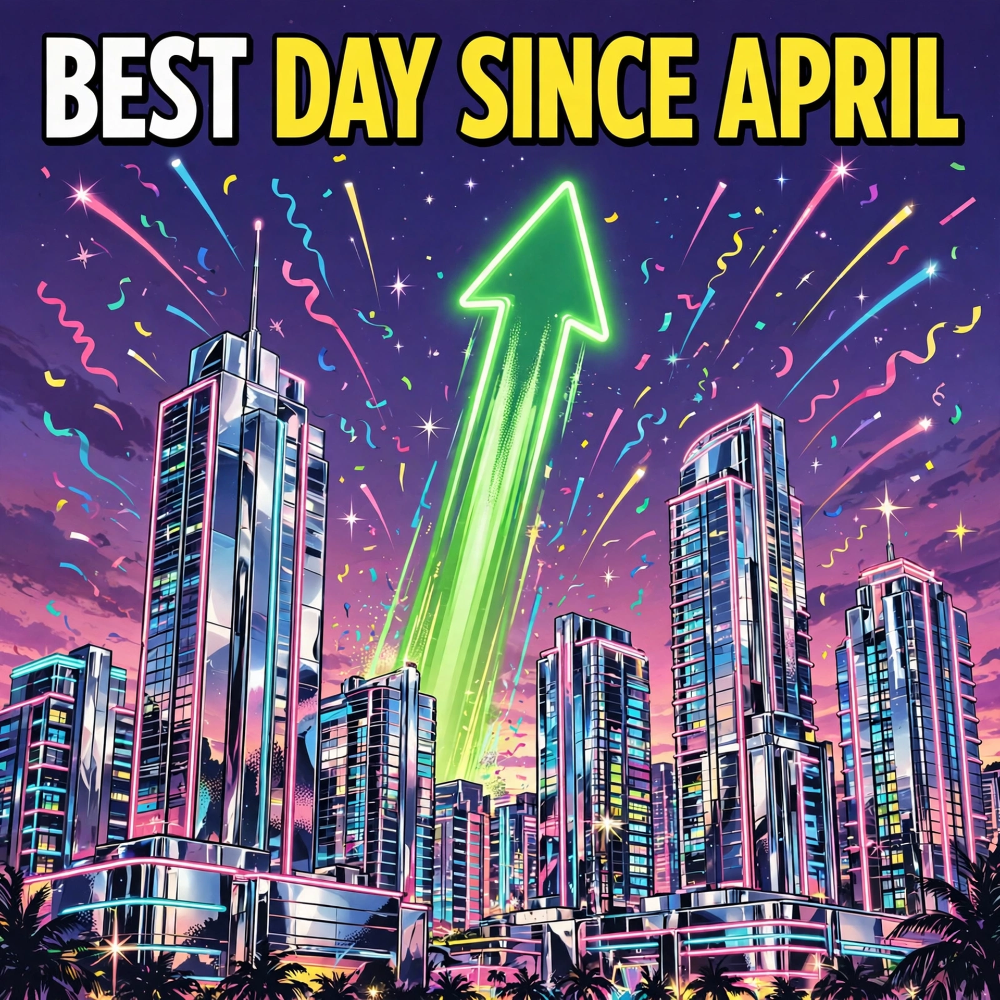
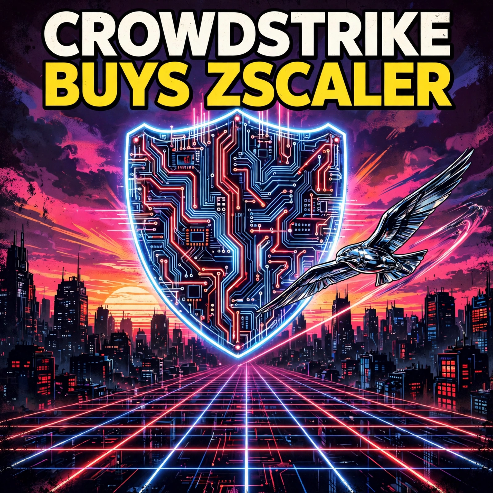
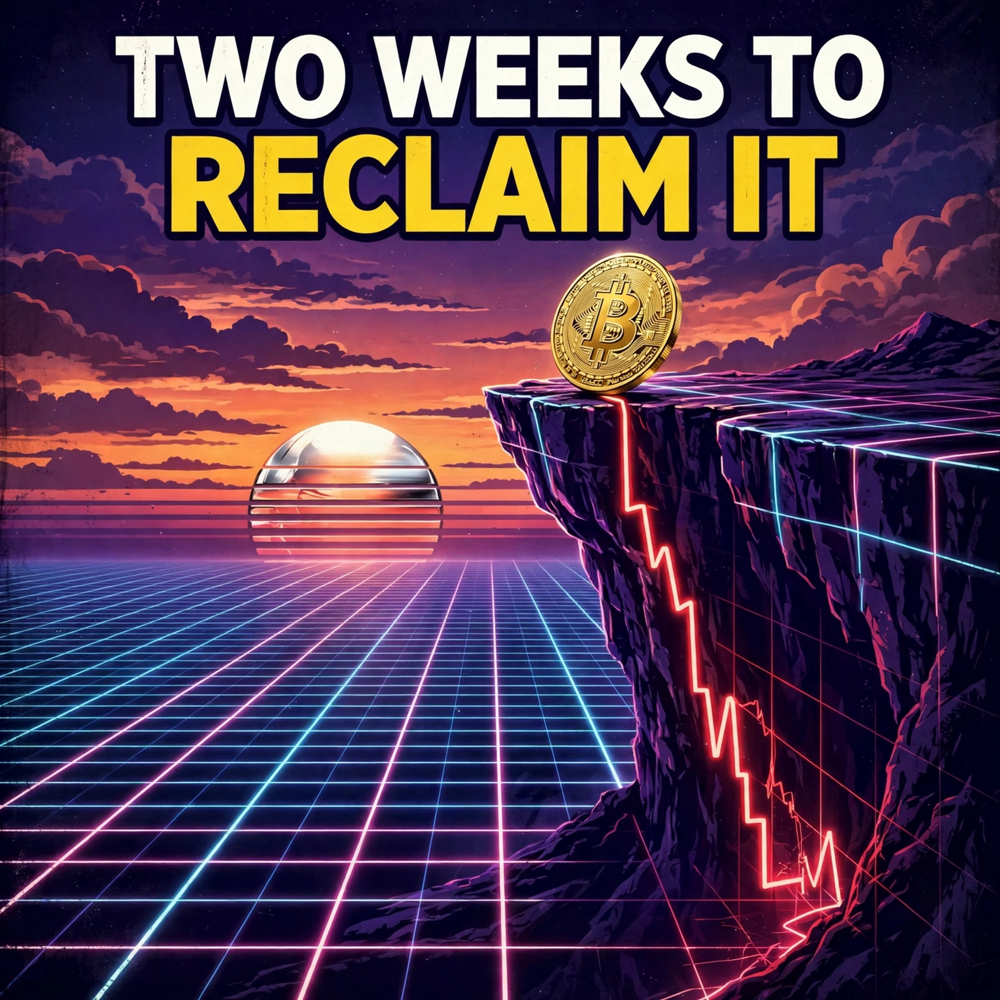
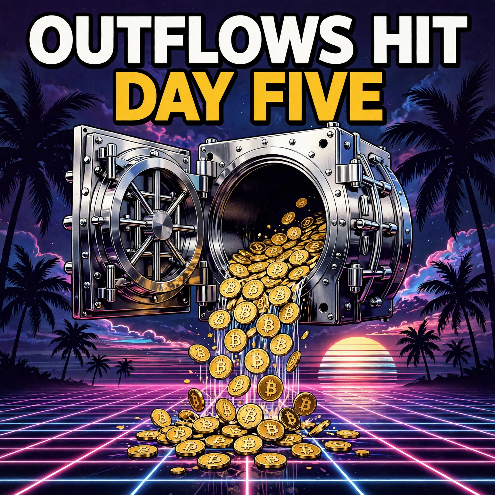

Bitcoin Stories — Tuesday, Nov 24, 2026

Nvidia's board unanimously reinstated Jensen Huang as president and CEO on Monday, Nov. 23, just 11 days after he resigned amid a scandal, and shares surged 31.5% — their best day since 2003 — adding roughly $950 billion in market value.
Read the full story →
The S&P 500 jumped 4.73% and the Nasdaq surged 6.51% on Monday, the S&P's best day since April 2025, as Nvidia's 31.5% rally ignited a broad rebound in AI and semiconductor stocks. The Dow gained about 3% and semiconductor shares rose 14%.
Read the full story →
CrowdStrike is buying Zscaler for about $44 billion in an all-stock deal, reported as the largest cybersecurity acquisition ever, announced on a day Wall Street staged a massive comeback.
Read the full story →
Bitcoin has spent three straight weeks below its 50-week moving average near $74,500, and Galaxy Research's Alex Thorn says it has about two weeks to close back above the line before his call that the bear market is over faces a serious test.
Read the full story →
Spot bitcoin ETFs recorded a fifth straight day of outflows, with $569.7 million leaving on Monday, Nov. 23, including $509 million from BlackRock's IBIT, while spot ether ETFs lost $85 million for a seventh straight day.
Read the full story →